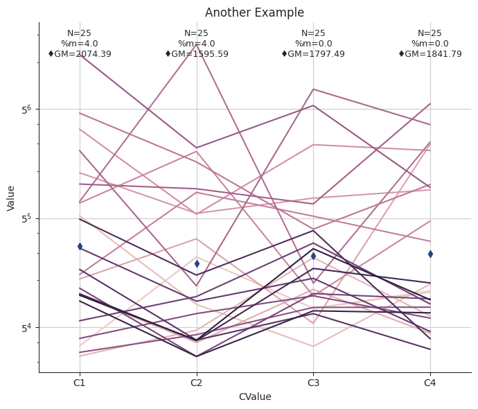

Example - Create Plots Using catPlotter¶
The module cdtg include basic functions for processing data and generate plots.
import warnings
warnings.filterwarnings("ignore", category=DeprecationWarning)
warnings.filterwarnings("ignore", category=FutureWarning)
To create a horizontal box plot:
import matplotlib.pyplot as plt
from mtbp3.util.cdtg import catPlotter
cat_plot = catPlotter(None, x_col='Group', y_col='Value', y_scale_base=5, title='An Example')
cat_plot.boxplot()
plt.show()
/home/runner/.cache/pypoetry/virtualenvs/mtbp3-STzYEG9e-py3.10/lib/python3.10/site-packages/seaborn/categorical.py:3399: UserWarning: 22.2% of the points cannot be placed; you may want to decrease the size of the markers or use stripplot.
warnings.warn(msg, UserWarning)
/home/runner/.cache/pypoetry/virtualenvs/mtbp3-STzYEG9e-py3.10/lib/python3.10/site-packages/seaborn/categorical.py:3399: UserWarning: 10.0% of the points cannot be placed; you may want to decrease the size of the markers or use stripplot.
warnings.warn(msg, UserWarning)
To create a line plot:
cat_plot = catPlotter(None, group_col='CValueGroup', y_col='Value', x_col='CValue', y_scale_base=5, title='Another Example')
cat_plot.lineplot()

Please note that the GM is defined as exponential of mean of natural base transform of $y$. When plot on the assigned scale base, that represent $\frac{1}{ln(5)}$ times the mean of natural base transform of $y$.